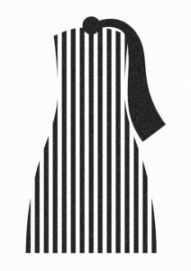

Trade Mark Journal No.2025/050 12 December 2025
WO0000001889203 (3,4,5,6,7,9,11,16,18,21,24,25,29,30,32,33,35,36,39,40,41,42,43)
Office of origin: Austria
Date of International Registration:6 June 2025
Date of designation in the UK:
6 June 2025

International priority date claimed: 21 May 2025
(Austria)
- Class 3
- Non-medicated cosmetics; non-medicated toiletry preparations; non-medicated dentifrices; perfumery; ethereal oils.
- Class 4
- Candles for lighting; perfumed candles.
- Class 5
- Pharmaceuticals; dietary supplements for human beings and animals; caffeine preparations for medical use; dietetic substances for babies; nutritional supplements; food for babies; dietetic preparations adapted for medical use; dietetic food preparations adapted for medical use; dietary supplements and dietetic preparations.
- Class 6
- Containers of metal [storage, transport].
- Class 7
- Vending machines.
- Class 9
- Audio/visual and photographic equipment; digital storage media; digital thermometers, other than for medical purposes; cash registers; scales; testing apparatus for electronic equipment; teaching apparatus; apparatus for broadcasting sound, data or images; calculating devices; programming units (computer-); machine control software; application software; computer peripheral devices; electrical scales; blank analogue storage media; blank analogue recording media; surveying apparatus and instruments; life saving apparatus and equipment; downloadable media; computer software; electronic units for transmitting audio signals; apparatus for the transmission of images; industrial process control software; electrical controls; digital recording media; apparatus and instruments for conducting the distribution of electricity; apparatus and instruments for switching the distribution of electricity; electronic databases recorded on computer media; coin-operated mechanisms; computer software to maintain and operate computer system; computers and computer hardware; downloadable mobile applications for the transmission of data.
- Class 11
- Electric coffee makers for household use.
- Class 16
- Paper and cardboard; printed matter; bookbinding material; photographs [printed]; stationery; drawing materials; drawing brushes; wrapping materials made of paper; labels of paper; gift wrap paper; packaging materials made of cardboard; stickers [stationery]; plastic film for wrapping; adhesives for household purposes; gift packaging; adhesives for stationery or household purposes; teaching materials [except apparatus]; plastic films for wrapping and packaging; adhesive materials for office use.
- Class 18
- Leather and imitations of leather; faux fur; luggage tags; luggage covers; bags; briefcases; umbrellas; parasols; bags for sports; walking sticks; mountaineering sticks; pocket wallets; travel cases; vanity cases, not fitted; business cases; toiletry bags; tie cases for travel; gentlemen's handbags; belt bags and hip bags; ladies' handbags; credit card cases [wallets]; purses; art portfolios [cases]; music bags; game bags [hunting accessories]; clothing for pets; collars for animals; leads for animals; harness for animals; hat boxes of leather; holders in the nature of cases for keys; covers for animals.
- Class 21
- Beverageware; cookware and tableware, except forks, knives and spoons; sponges for household purposes; brushes (except paintbrushes); material for brush-making; cleaning articles; glassware; coffee cups; coffee mugs; coffee pots; coffee scoops; coffee filters, non-electric; household containers; coffee grinders, hand-operated; vacuum flask cookers; porcelain; unworked glass; brushes; unworked or semi-worked glass (except glass used in building); non-electric plunger style coffee makers.
- Class 24
- Linens; sleeping bags for babies; baby blankets; bath sheets; bath towels; bath linen, except clothing; bed canopies; curtains; banners of textile or plastic.
- Class 25
- Parts of clothing, namely, cuffs, ready-made linings, pockets; parts of footwear, namely, non-slipping devices for footwear, soles for footwear; parts of headgear, namely, hat frames [skeletons]; clothing; footwear.
- Class 29
- Game, not live; canned sliced vegetables; jellies, jams, compotes, fruit and vegetable spreads; eggs; soya milk; edible oils and fats; milk; oat milk; milk products; coffee creamer; almond milk; yoghurt; vegetables, preserved; vegetables, cooked; fruit, preserved; frozen fruits; frozen vegetables; dried fruit; powdered cream; fish extracts; vegetables, dried; coffee cream in the form of powder.
- Class 30
- Coffee extracts; mixtures of coffee essences and coffee extracts; preparations for making beverages [coffee based]; tapioca; sago; flour; cereal flour; cereal preparations; pastries; chocolate; sherbets [ices]; sugar, honey, treacle; baking powder; preserved herbs; sauces [condiments]; ice [frozen water]; coffee; ground coffee; prepared coffee beverages; coffee capsules, filled; coffee bags; flavoured coffee; coffee-based beverages; sugar; coffee oils; vinegar; flavourings, other than essential oils, for beverages; mixtures of coffee; artificial coffee; flavourings for beverages; coffee-based beverages; coffee flavourings; bread; prepared desserts [confectionery]; ice cream; coffee in whole-bean form; coffee concentrates; decaffeinated coffee; roasted coffee beans; flour confectionery; dried and fresh pastas, noodles and dumplings.
- Class 32
- Beer; non-alcoholic beverages; mineral water [beverages]; aerated water; fruit drinks; juices; syrups for making beverages; non-alcoholic preparations for making beverages.
- Class 33
- Alcoholic beverages (except beer); alcoholic coffee-based beverage; preparations for making alcoholic beverages.
- Class 35
- Advertising; business administration and management; data processing services [office functions]; retail services in relation to coffee; product launch services; business promotion; sales promotion for others; business management organization; wholesale services in relation to coffee; online advertising; advertising agency relating to the provision of business.
- Class 36
- Financial, monetary and banking services; insurance services; real estate services; issuing tokens of value in the nature of gift vouchers; financial loan services; equipment financing services.
- Class 39
- Transport; packaging and storage of goods; arranging of transportation for travel tours; delivery of food by restaurants; storage and delivery of goods; agency services for arranging the transportation of goods.
- Class 40
- Recycling of waste and trash; printing; coffee roasting and processing; food and drink preservation.
- Class 41
- Educational instruction; training; entertainment services; sporting and cultural activities; arranging and conducting of workshops [training]; conducting of courses; arranging and conducting of competitions for education or entertainment.
- Class 42
- Science and technology services; consultancy services in the field of technological development; industrial analysis and research services; quality control and authentication services; design and development of computer hardware; research relating to the development of computer hardware.
- Class 43
- Services for providing food and drink; café services; coffee supply services for offices [provision of beverages]; catering services for company cafeterias; food and drink catering; temporary accommodation.
Franz Erhardt
Representative: Andreas Eustacchio, Währinger Straße 26, A-1090 Wien, AUSTRIA